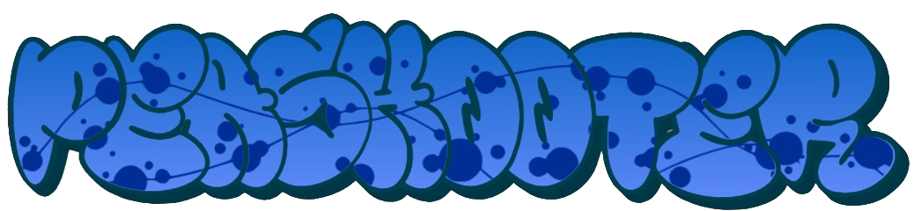

This is not an official design of the Peashooter's potion!
There is no design of it shown in the game other than inside the Elder Kettle's house, which is very low quality.
Original Peashooter Asset
{kind=link}
In-Game Description
"Standard issue weapon. Long range with average damage."
Regular Attack
The Peashooter
The Peashooter is the standard starting weapon in Cuphead, providing a simple and effective way to deal with enemies at a medium range.
It fires a single, relatively slow bullet that can hit enemies from a decent distance. The Peashooter doesn’t have the highest DPS or damage, but it’s
perfectly fine for the early stages of the game or for players just getting used to the mechanics. It's an all-around reliable choice.
To get the most out of the Peashooter, you’ll want to focus on positioning and movement to land clean hits while avoiding taking damage yourself.
Super Attack
The Mega Blast
The Mega Blast significantly increases the size and speed of the shots, allowing you to fire a much larger bullet.
It also fires more quickly, letting you deal more damage to bosses or multiple enemies in the heat of battle.
Unlike other super attacks, the Mega Blast is more straightforward but effective in situations that require continuous firepower.
Statistics
| Weapon | Damage | DPS | Price | Fire Delay (Frames) |
|---|---|---|---|---|
| Peashooter | 4 | 30 | 0 coins | 8 Frames |
| Mega Blast | 8.33 (per hit) 25 (max) | 68 | 0 coins | 34 Frames |